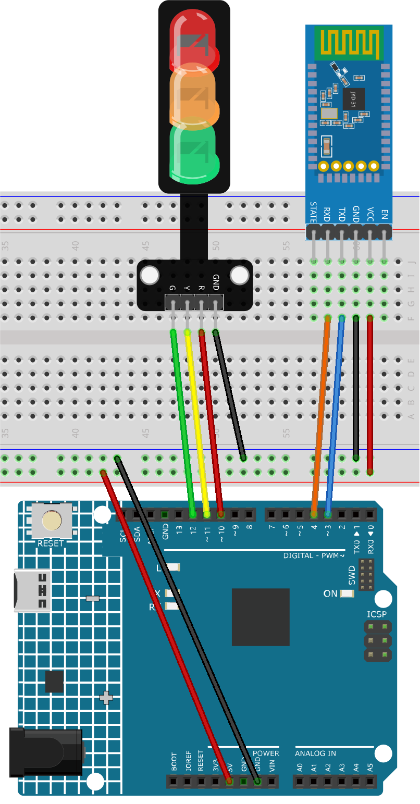
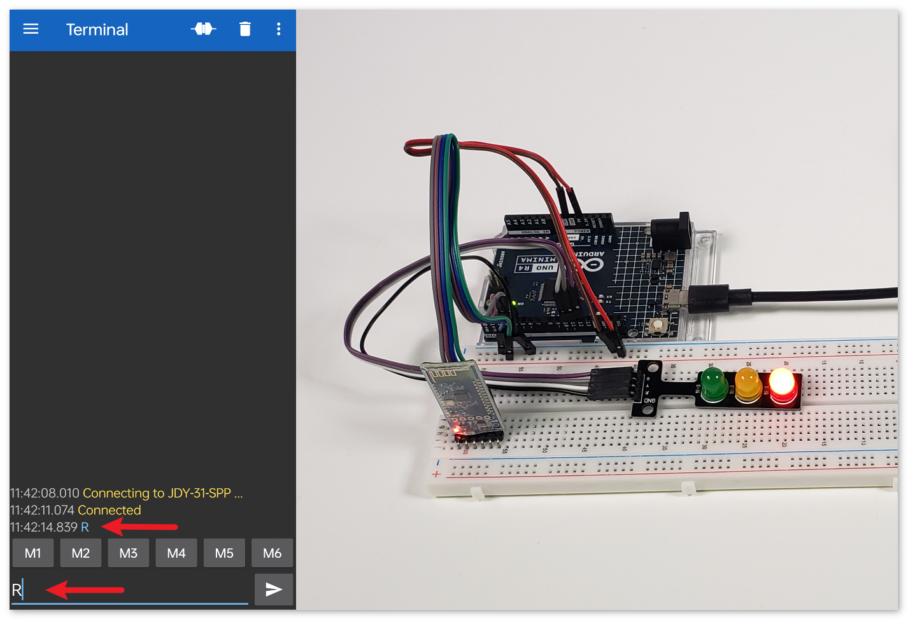
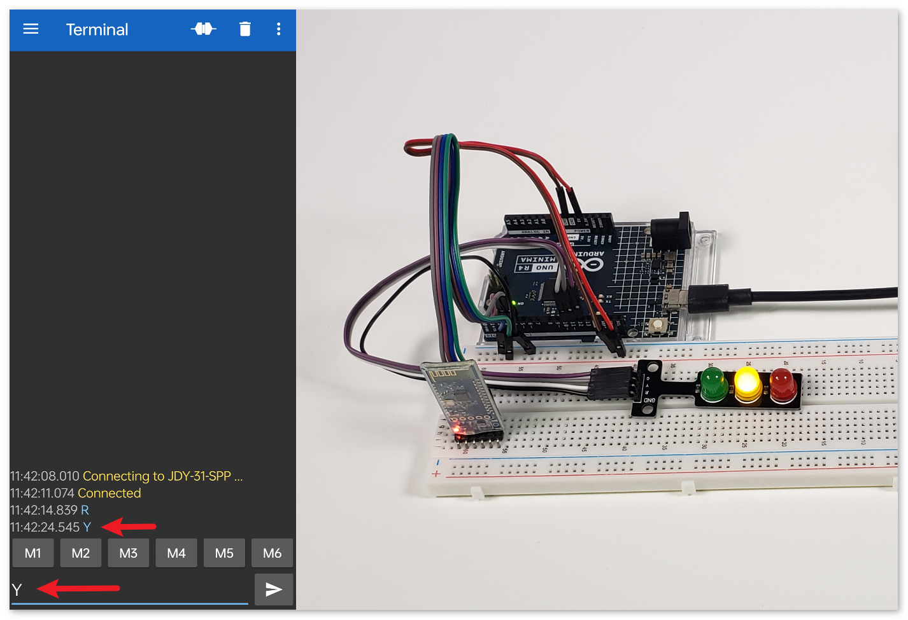
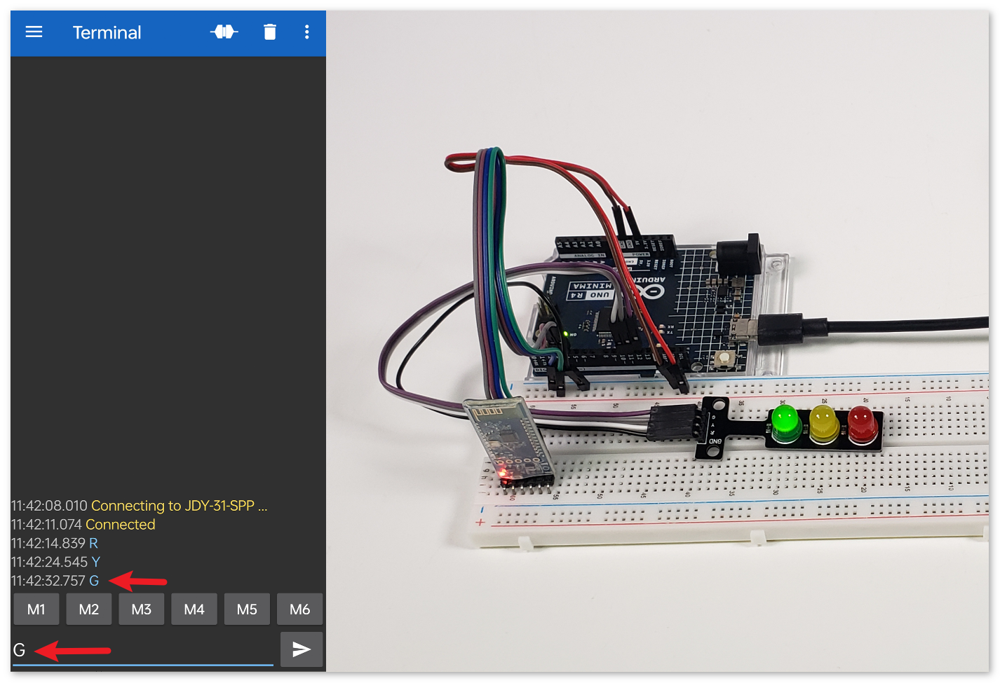

Bemerkung
Hallo und willkommen in der SunFounder Raspberry Pi & Arduino & ESP32 Enthusiasten-Gemeinschaft auf Facebook! Tauchen Sie tiefer ein in die Welt von Raspberry Pi, Arduino und ESP32 mit anderen Enthusiasten.
Warum beitreten?
Expertenunterstützung: Lösen Sie Nachverkaufsprobleme und technische Herausforderungen mit Hilfe unserer Gemeinschaft und unseres Teams.
Lernen & Teilen: Tauschen Sie Tipps und Anleitungen aus, um Ihre Fähigkeiten zu verbessern.
Exklusive Vorschauen: Erhalten Sie frühzeitigen Zugang zu neuen Produktankündigungen und exklusiven Einblicken.
Spezialrabatte: Genießen Sie exklusive Rabatte auf unsere neuesten Produkte.
Festliche Aktionen und Gewinnspiele: Nehmen Sie an Gewinnspielen und Feiertagsaktionen teil.
👉 Sind Sie bereit, mit uns zu erkunden und zu erschaffen? Klicken Sie auf [hier] und treten Sie heute bei!
Bluetooth-Ampel
Dieses Projekt dient der Steuerung einer Verkehrsampel (rote, gelbe, grüne LEDs) über Bluetooth-Kommunikation. Der Nutzer kann einen Buchstaben (‚R‘, ‚Y‘ oder ‚G‘) von einem Bluetooth-Gerät senden. Bei Empfang eines dieser Zeichen leuchtet die entsprechende LED auf, während die beiden anderen LEDs ausgeschaltet bleiben.
1. Schaltung aufbauen


2. Code hochladen
Öffnen Sie die Datei
02-Bluetooth_traffic_light.inoim Pfadultimate-sensor-kit\iot_project\bluetooth\02-Bluetooth_traffic_lightoder kopieren Sie diesen Code in die Arduino IDE.Wählen Sie das korrekte Board und den entsprechenden Port aus, und klicken Sie auf den Hochladen-Button.
Öffnen Sie den Seriellen Monitor (Baudrate auf 9600 einstellen), um Debug-Meldungen anzuzeigen.
3. App und Bluetooth-Modul verbinden
Zur Kommunikation können wir die App „Serial Bluetooth Terminal“ verwenden, um Nachrichten vom Bluetooth-Modul an den Arduino zu senden.
Serial Bluetooth Terminal installieren
Laden und installieren Sie Serielles Bluetooth-Terminal über den Google Play Store.
Bluetooth verbinden
Aktivieren Sie zuerst Bluetooth auf Ihrem Smartphone.

Navigieren Sie zu den Bluetooth-Einstellungen auf Ihrem Smartphone und suchen Sie nach Namen wie JDY-31-SPP.

Nach dem Anklicken stimmen Sie der Kopplungsanfrage im Pop-up-Fenster zu. Falls nach einem Kopplungscode gefragt wird, geben Sie „1234“ ein.

Mit dem Bluetooth-Modul kommunizieren
Öffnen Sie das Serial Bluetooth Terminal und verbinden Sie sich mit „JDY-31-SPP“.

Befehle senden
Verwenden Sie die Serial Bluetooth Terminal App, um Befehle über Bluetooth an den Arduino zu senden. Senden Sie R, um das rote Licht einzuschalten, Y für gelb und G für grün.





4. Code-Erklärung
Initialisierung und Bluetooth-Konfiguration
// Set up Bluetooth module communication #include <SoftwareSerial.h> const int bluetoothTx = 3; const int bluetoothRx = 4; SoftwareSerial bleSerial(bluetoothTx, bluetoothRx);
Zunächst binden wir die SoftwareSerial-Bibliothek ein, um die Bluetooth-Kommunikation zu erleichtern. Danach definieren wir die TX- und RX-Pins des Bluetooth-Moduls und ordnen sie den Pins 3 und 4 am Arduino zu. Abschließend initialisieren wir das
bleSerial-Objekt für die Bluetooth-Kommunikation.Definition der LED-Pins
// Pin numbers for each LED const int rledPin = 10; //red const int yledPin = 11; //yellow const int gledPin = 12; //green
Hier legen wir fest, an welchen Arduino-Pins unsere LEDs angeschlossen sind. Die rote LED ist am Pin 10, die gelbe am 11 und die grüne am 12 angeschlossen.
Funktion setup()
void setup() { pinMode(rledPin, OUTPUT); pinMode(yledPin, OUTPUT); pinMode(gledPin, OUTPUT); Serial.begin(9600); bleSerial.begin(9600); }
In der Funktion
setup()setzen wir die LED-Pins alsOUTPUT. Des Weiteren starten wir die serielle Kommunikation sowohl für das Bluetooth-Modul als auch für die Standard-Serielle-Schnittstelle (verbunden mit dem Computer) mit einer Baudrate von 9600.Hauptloop() für die Bluetooth-Kommunikation
void loop() { while (bleSerial.available() > 0) { character = bleSerial.read(); Serial.println(character); if (character == 'R') { toggleLights(rledPin); } else if (character == 'Y') { toggleLights(yledPin); } else if (character == 'G') { toggleLights(gledPin); } } }
In unserer Haupt-Schleife
loop()prüfen wir fortlaufend, ob Daten vom Bluetooth-Modul verfügbar sind. Falls Daten empfangen werden, lesen wir das Zeichen aus und zeigen es im seriellen Monitor an. Je nach empfangenem Zeichen (R, Y oder G) schalten wir die jeweilige LED mit der FunktiontoggleLights()um.Funktion zum Umschalten der Lichter
void toggleLights(int targetLight) { digitalWrite(rledPin, LOW); digitalWrite(yledPin, LOW); digitalWrite(gledPin, LOW); digitalWrite(targetLight, HIGH); }
Diese Funktion,
toggleLights(), schaltet zuerst alle LEDs aus. Nachdem sichergestellt ist, dass alle LEDs ausgeschaltet sind, wird die spezifizierte Ziel-LED eingeschaltet. Dadurch wird gewährleistet, dass jeweils nur eine LED aktiv ist.